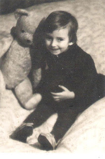

Z zaključkom leta razmišljamo o minulem in se znajdemo v neznanih pričakovanjih Novega. Marsikogar slišim ali koga preberem, da naj bi z novimi dnevi naslednjega leta pospravljali, oddali ali zavrgli reči ali neplodne projekte, da naredimo prostor novemu.
Ker ima leto največkrat 365 živih dni, lahko izvajamo akcijo pospravljanja-sortiranja sproti. Veliko ljudi se za Novo leto na silo hoče znebiti kakšnih predmetov, ob čimer večkrat pomišljam, da je reč funkcionalna, ker se na stvareh ne nabira prah, da so stvari lahko velikokrat le na oko pospravljene. Sicer pa tudi ob odsotnosti fizičnih bližin ostaja za rečjo spomin ali le občasna misel, ki tvori energijsko formo za nečem.
S tem ne trdim, da pospravljanje običajnih balastnih navlak ali predmetov ni podporno v smislu organiziranja in treniranja v preudarnejšem izbiranju, le na misel mi hodi pomembnost vsakodnevnega odnosa-namembnosti reči in stvari, ki jih kupujemo in se jih drugič, hočemo ali ne moremo znebiti.
Največkrat pa sami z občutenjem določamo ali imajo predmeti slabo ali dobro energijo zato se lahko zgodi, da nam na tak način, naše nezavedno stanje sporoča “napake” preteklih odločitev. Takrat je neizogibno treba sprejeti v zakup, da smo nekaj prehitro ali prepozno spustili v svojo intimno bližino, postavili na polico, v omaro-spustili v svoj Dom.
Človek je bolj ali manj podvržen ne-samokritiki, zato tudi išče razloge in načine kako bi se odkrižal nečesa na kar ima slabe spomine.
Ob tem se je treba upoštevati, da reč ali predmet lahko zavržeš-odstraniš, drugače pa je s spominom in občutkom, ki še vedno ostane in je ključnega pomena za pogovor o spravi s samim seboj.
Spomnim se ene redkih igrač, kosmatega medvedka in poka suhe slame vsakič, ko sem ga kot otrok stiskala k sebi. Vem, da me je v hudem tolažil s svojo mehkobo in odločnim pogledom oči, ki so bile našite iz odsluženih gumbov. Vem tudi, da to ni bil moj najlepši čas, … a kaj bi dala, da bi danes, iz popolnoma drugih razlogov, dobila slamnatega medveda nazaj? … Ni ga več, ker sem ga strganega pred mnogimi leti zavrgla, celo skurila v smeteh med pospravljanjem.V trenutku površnosti spomina sem sebično videla le sebe, da je medved krama, ki je ne potrebujem več.
Vse napačne odločitve, nakupi, tudi sprejeti predmeti, so del naše Zgodovine, kulture, še več, predstavljajo dodano vrednost naši Poti. V dobi poplave vsega je menda ustrezno sproti razmišljati, kaj ima za nas vrednost in zaradi česa. Kaj bomo zavrgli in kaj ne, da nam ni treba konec leta znova in znova na natezalnico generalnega pospravljanja. Predvsem pa, da sebi in Novemu Letu ne naložimo teže obljub, ki bi drugo leto neizpolnjene rušile kake sorte Mir.

Aurelija Z. M.
← Nazaj na članke